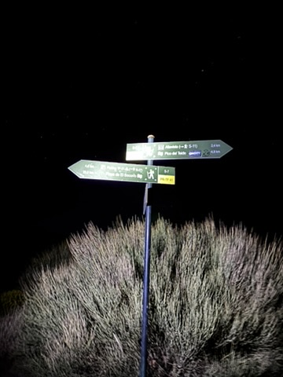
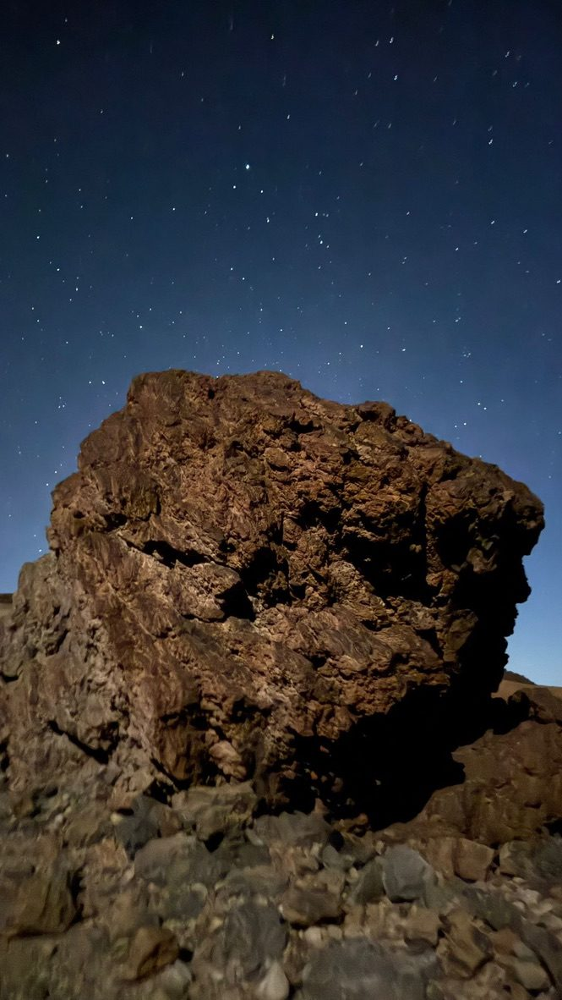
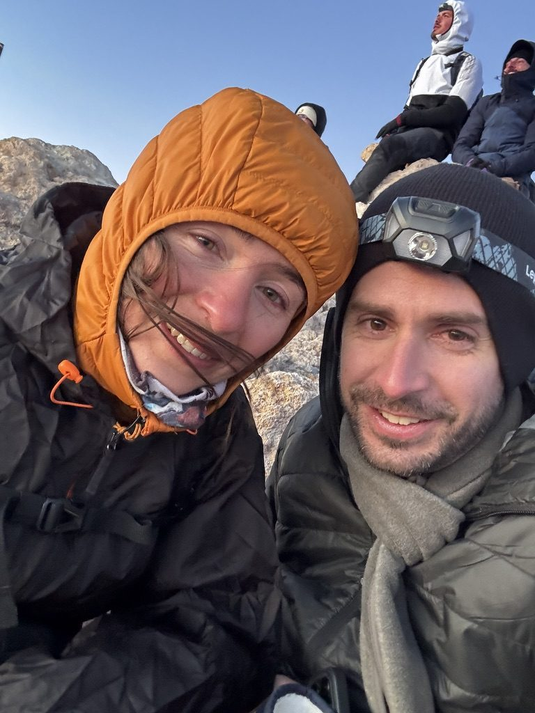
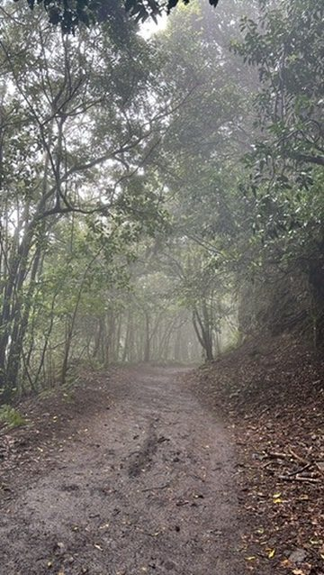
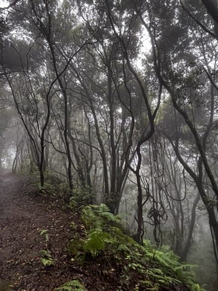

Tenerife holds two landscapes that have no business being on the same island. One is volcanic, almost Martian — ash and lava rock and a summit that punches through the clouds. The other is ancient and dripping and green, a laurisilva forest that feels older than the concept of time. I did both in one day, which was perhaps not the most sensible decision but was absolutely the right one.
Starting in the dark
The plan for El Teide is always the same: start early enough to reach the summit crater for sunrise. Early in this context means leaving before 2am. You drive up to the national park in darkness, headlights cutting through empty roads, the temperature dropping quickly as you gain altitude. By the time you park and lace your boots, it is cold and quiet and the only light is from the stars, which at this elevation are genuinely overwhelming.

2am at the El Teide trailhead. Cold. Dark. Exactly right.
The path up through the natural park in the dark is disorienting in the best way. You see the moon moving across the lava fields, the outline of the crater against the stars, and occasionally another headtorch far ahead on the trail — proof that someone else made this same choice.

The natural park at night. Lunar, silent, and completely unlike anything I'd seen before.
The light arriving
The sunrise above the clouds on El Teide is one of those things that photographs don't fully capture — not because it isn't photogenic, but because what makes it extraordinary is the silence and the cold and the fact that you earned it. The cloud layer sits below you, flat and pink in the first light, and the shadow of the volcano stretches across it like a perfect triangle pointing west. You stand there at the highest point in Spain and feel, for a moment, that the world is extremely manageable from up here.

Above the clouds. The sun arriving. No amount of tired feels like much up here.
The wind at the summit is real and consistent and doesn't care about your jacket. You lean into it slightly and it pushes back. It is one of those physical conversations with a place that you remember later, not just the view but the feeling of the air.

High on El Teide. Wind-blown. Refusing to complain about it.
The other Tenerife
After the summit, after sleep, after food — the Anaga. If El Teide is the Tenerife of postcards, the Anaga Rural Park in the northeast is the one nobody tells you about. It is a laurisilva forest, a relict of the ancient subtropical forest that once covered much of Europe and has survived here because of the specific combination of altitude and trade wind cloud. The trees are draped in moss. The paths disappear into mist. Everything is green in seventeen slightly different ways.

The Anaga forest. A path that looks exactly like the beginning of a fairy tale, and feels like one too.
There is no view in the Anaga. Instead there is texture — the sound of water you can't see, the smell of wet earth, the way the light filters through layers of leaves and mist so that everything glows faintly green. After a morning of volcanic exposure and enormous sky, it felt like stepping into a different category of world entirely.

Fog so thick you walk by feel. The Anaga doesn't show itself all at once.
I walked for two hours without seeing another person. The mist moved around me and the birds made sounds I didn't recognise and at no point did I know exactly where I was going, which turned out to be completely fine. Tenerife, it turns out, is an island you can get lost in twice in one day — once above the clouds, and once in the green.
Heading up El Teide or into the Anaga? Get covered first.
Considering travel insurance for your trip? World Nomads offers coverage for more than 150 adventure activities — including hiking at altitude — as well as emergency medical, lost luggage, trip cancellation and more.
Get a Quote from World NomadsThis is an affiliate link — if you book through it, I may earn a small commission at no extra cost to you.